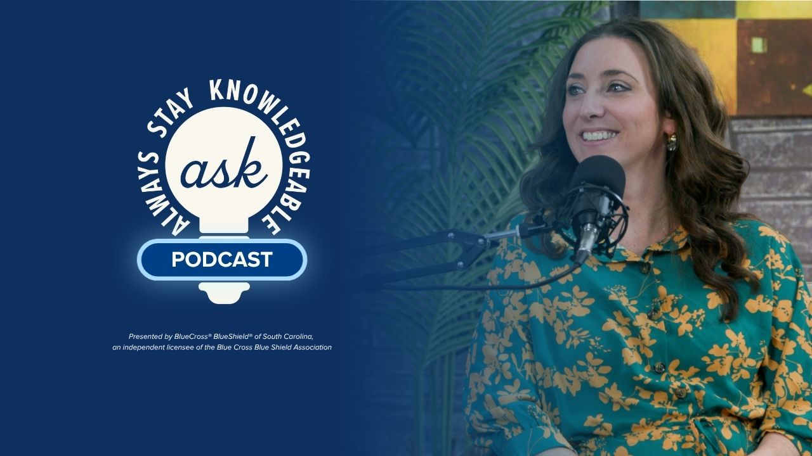
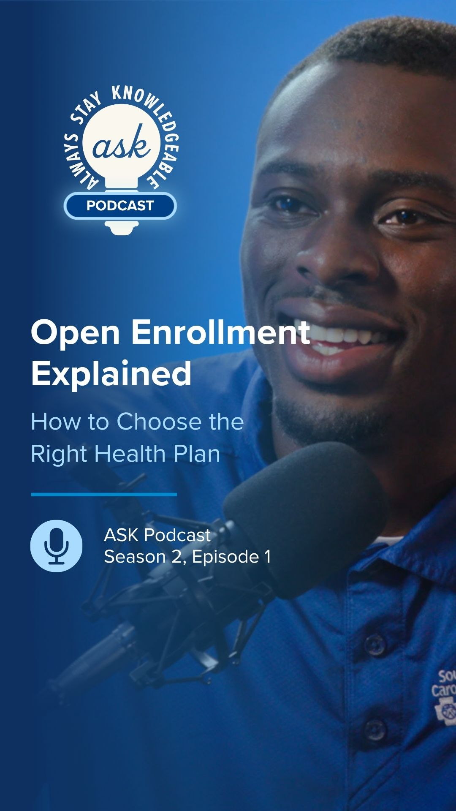
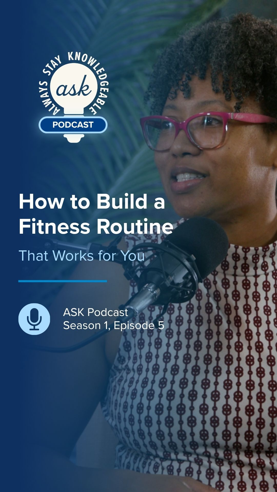
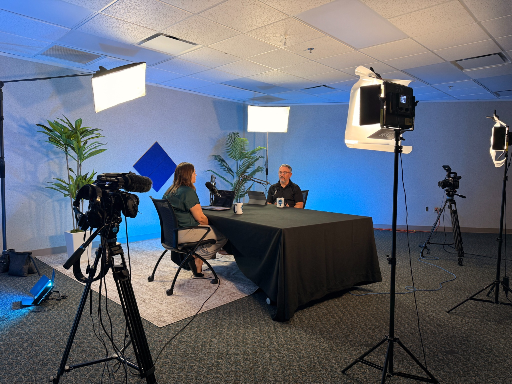
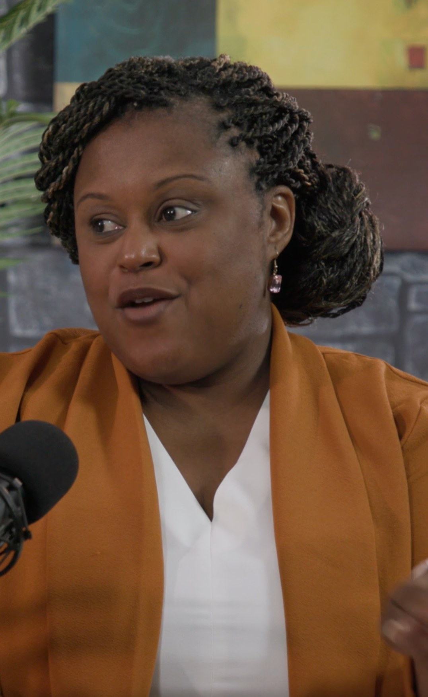

Case study / ASK podcast relaunch
Give good questions a wider audience.
I worked with my team to reposition an existing behavioral health podcast as a broader education platform. We aligned editorial scope, identity, video production, and distribution so company expertise could reach people through full episodes, audio, and short social content.
See the brand and production examples ↓At a glance
- What I owned
- I worked with my team on the rebrand, broader editorial scope, video transition, and expanded distribution.
- The decision
- Make each conversation useful as a full episode, an audio release, and short social content.
- The outcome
- 60,000 impressions and 25,000 video views across platforms since July 2026. The separate 80% YouTube following growth covers two years.
An established format with room to grow.
When I joined the social media team in 2024, the podcast focused on behavioral health and had limited momentum. That subject remained important, but there was an opportunity to answer more of the questions people brought to the company.
In 2026, I worked with my team to rebrand the series as ASK: Always Stay Knowledgeable. We expanded the editorial scope to include health insurance basics, careers and recruiting, and broader health topics while continuing to include behavioral health.
The choice: broaden the purpose and change the format.
The editorial decision was to organize the series around people’s questions. That gave different parts of the company a relevant role in the content while keeping one clear purpose: help people stay knowledgeable. Behavioral health remained part of that promise rather than defining its limits.
We also moved from an audio podcast to video. A recording could now support a full-length episode, an audio release, and short reels for social media. This gave the team more ways to use a conversation and more places for people to encounter it.
Make the work travel further.
Distribution expanded from Spotify alone to five podcast platforms in total, plus YouTube. The change connected editorial direction, recording format, packaging, and distribution in one owned-media strategy. Each conversation could support audience education in more than one format.
| Area | Before | After |
|---|---|---|
| Editorial focus | Behavioral health | Insurance education, careers, and health topics, including behavioral health |
| Recording format | Audio podcast | Video podcast with audio distribution |
| Distribution | Spotify | Five podcast platforms plus YouTube |
| Content use | Podcast episodes | Full-length episodes and short social reels |
Early audience response.
Since the July 2026 relaunch, the podcast content has recorded 60,000 impressions and 25,000 video views across platforms. These reported totals describe exposure and viewing for the relaunched content.
The broader focus on YouTube has also increased the channel’s following by 80% over two years. That longer-period result reflects the wider YouTube strategy; the podcast figures cover the period since its July relaunch.
Work samples
A consistent identity across formats.
The work samples show the updated episode identity, horizontal and vertical packaging, and the recording environment. The same series can support a longer conversation and shorter moments designed for social channels.




View a vertical interview frame

Next project
Medicare Advantage campaign